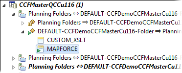
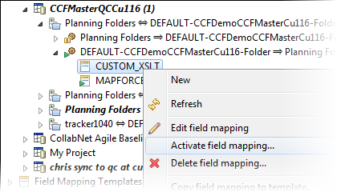

When mapping requirements change, you can switch the active field mapping to a different one.
Switching the active field mapping allows you to experiment with a different configuration without having to overwrite your existing mapping.
The active field mapping is indicated by a green arrow -- here's an example:

-
To switch to a different field mapping, right-click the one you want and select Activate field mapping.

-
Select OK in the confirmation dialog.